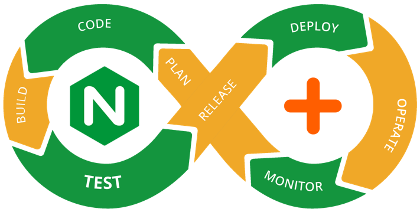

Adv. Load Balancing
Flawless Application Delivery
Trainer Intro
James Tacker
Technology Consultant & Content Developer
Previous Training Work:
- Sauce Labs
- New Relic
- Salesforce
- Atlassian

Prerequisites/Expectations
- Sysadmin, DevOps, Solution Architect
- Completed NGINX Core
- Some familiarity with Linux
- Text Editor: Vim, Vi, Emacs etc.
- Solid understanding of Network topologies
The Training Environment
- AWS EC2 Instances
- Ubuntu
- NGINX Plus
- Wordpress
- Tomcat 7
Log Into AWS
If you haven't done so already, please take the time to SSH into your EC2 Instances (Windows users use PuTTY).
Check your email for the login credentials, check your spam folder!
ssh student<number>@<ec2-server-hostname>
Course Administration
- Course Duration: 4 hours
- Ask questions at any time!
Agenda

Load Balancing Review
Module Objectives
This module enables you to:
- Configuration Overview
- Hardware Migration
- Error Pages
Value of NGINX in DevOps Chain
Load Balancing Components
- Selection Algorithm
upstreamproxy_passhealth_check
Load Balancing Configuration
upstream myServers {
server localhost:8080;
server localhost:8081;
server localhost:8082;
}
server {
listen 80;
root /usr/share/nginx/html;
location / {
proxy_pass http://myServers;
}
}
Lab 1.1: Configure a New Upstream
- Create a configuration file called
main.confin/etc/nginx/conf.dwith aserverthat listens on80 - Add three servers in the
upstreamblock (ask your instructor for the backend urls) - Create a
locationprefix toproxy_passto yourupstreamgroup. - Define an
error_logwith a level ofinfoand anaccess_logwith a level ofcombined - Save and reload NGINX
- Test in a local browser (refresh multiple times)
- Read the
access_logto see destination of request
Migrating from Hardware
- No need to "rip and replace"
- Can work in parallel with legacy hardware
- Terminology Differences
- NSIP, SNIP = Host IP
- VIP = Virtual IP address
- Monitor =
health_check
Deployment Scenario 1
NGINX does ALL Load Balancing
Deployment Scenario 2
NGINX Works in Parallel with Legacy Hardware
Deployment Scenario 3
NGINX Sits behind Legacy Hardware
Configuration Translations
- Request Redirect:
return - Request Rewrite:
rewrite - Response Rewrite:
sub_filter - Searching Files:
try_files
Request Redirect
#F5 iRule
when HTTP_REQUEST {
HTTP::redirect "https://[getfield [HTTP::host] ":" 1][HTTP::uri]"
}
----------------------------------------------------------------------
#NGINX
location / {
return 301 https://$host$request_uri;
}
Request Rewrite
#F5 iRule
when HTTP_REQUEST {
if {[string tolower [HTTP::uri]] matches_regex {^/music/([a-z]+)/([a-z]+)/?$} } {
set myuri [string tolower [HTTP::uri]]
HTTP::uri [regsub {^/music/([a-z]+)/([a-z]+)/?$} $myuri "/mp3/\\1-\\2.mp3"]
}
}
-------------------------------------------------------------------------------
#NGINX
location ~*^/music/[a-z]+/[a-z]+/?$ {
rewrite ^/music/([a-z]+)/([a-z]+)/?$ /mp3/$1-$2.mp3 break;
proxy_pass http://music_backend;
}
Response Rewrite
#F5 iRule
when HTTP_RESPONSE {
if {[HTTP::header value Content-Type] contains "text"} {
STREAM::expression {@/mp3/@/music/@}
STREAM::enable
}
}
--------------------------------------------------------------
#NGINX
location / {
sub_filter '/mp3/' '/music/';
proxy_pass http://default_backend;
}
Searching For Files
if directive is bad practice
try_files directive is a better choice
if Directive
- Can cause NGINX to SIGSEGV
- Essentially creates a nested
locationblock that has to run on every request - Only 100% safe use cases:
return...;rewrite ... last/permanent;
if ($request_method = POST ) {
return 405;
}
---------------------------------------------------
if ($args ~ post=140){
rewrite ^ http://example.com/ permanent;
}
try_files Directive
- NGINX checks for the existence of files and/or directories in order
- Commonly uses the
$urivariable - If no file or directory exists, NGINX performs an
internalredirect
location / {
try_files $uri $uri/ @proxy;
}
location @proxy {
proxy_pass http://backend/index.php;
}
error_page Directive
- Create and reference custom error pages
- Best practices:
- Set
rootforerror_page - Separate messages for each code or range
- Set
error_page 404 /404.html;
location = /404.html {
root /usr/share/nginx/html;
}
error_page 500 502 503 504 /50x.html;
location /50x.html {
root /usr/share/nginx/html;
}
Lab 1.2: I am Error
- In
main.confforce theserverto only acceptipv6traffic - Write two
error_pagedirectives for404and50xcodes - Append a custom page location for each directive
- Add a prefix called
/testalong with the following line: - Reload NGINX, test your ec2-url and custom pages
listen [::]:80 default_server ipv6only=on;
error_page 404 /custom_404.html;
error_page 500 502 503 504 /custom_50x.html;
fastcgi_pass unix:/null/path;
Advanced Security
Module Objectives
This module enables you to:
- Signature Strength
- Cipher Strength
- A+ Score on SSL Labs.com
General Infrastructure Security
- Turn off server_tokens
- Turn off corresponding backend engine headers
- X-Powered-By
- Change client side error pages
- Encrypt ALL THE THINGS!!!
- Test on SSL Labs.com
Getting a Perfect SSL Score
- Verify cert/chain in order and from trusted authority
- Use strong signature algorithm
- Use the latest protocol support
- Generate strong key signature
- Use preferred ciphers
Configure HTTPS
- Enable
sslonlistendirective - Specify
ssl_certifcateandssl_certificate_key
server {
listen 443 ssl;
root /data;
ssl_certificate /etc/nginx/ssl/nginx.crt;
ssl_certificate_key /etc/nginx/ssl/nginx.key;
}
ssl_dhparam
- Specifies a file with DH parameters for DHE ciphers
- Aids in Forward Secrecy
- Make them strong, 4096 rather than 2048
server {
listen 443 ssl;
root /data;
ssl_certificate /etc/nginx/ssl/nginx.crt;
ssl_certificate_key /etc/nginx/ssl/nginx.key;
ssl_dhparam ssl/dhparam.pem;
}
ssl_protocols
- Specifies which protocols are enabled
- Best Practice: Only support TLS
- Best Practice: Only support latest for higher rating
server {
listen 443 ssl;
root /data;
ssl_certificate /etc/nginx/ssl/nginx.crt;
ssl_certificate_key /etc/nginx/ssl/nginx.key;
ssl_dhparam ssl/dhparam.pem;
ssl_protocols TLSv1 TLSv1.1 TLSv1.2;
}
ssl_ciphers
- Specifies a list based on business needs
- Moving target; ciphers constantly change, new security threats arise daily
- Configure NGINX to force client to accept preferred order of ciphers
server {
listen 443 ssl;
root /data;
ssl_certificate /etc/nginx/ssl/nginx.crt;
ssl_certificate_key /etc/nginx/ssl/nginx.key;
ssl_dhparam ssl/dhparam.pem;
ssl_protocols TLSv1 TLSv1.1 TLSv1.2;
ssl_ciphers AES256+EECDH:AES256+EDH:!aNULL;
ssl_prefer_server_ciphers on;
}
ssl_stapling
ssl_stapling”staples” an OCSP responsessl_stapling_verifyverifies OCSP responsesssl_trusted_certificaterequired
server {
listen 443 ssl;
root /data;
ssl_certificate /etc/nginx/ssl/nginx.crt;
ssl_certificate_key /etc/nginx/ssl/nginx.key;
ssl_dhparam ssl/dhparam.pem;
ssl_protocols TLSv1 TLSv1.1 TLSv1.2;
ssl_ciphers AES256+EECDH:AES256+EDH:!aNULL;
ssl_prefer_server_ciphers on;
ssl_stapling on;
ssl_stapling verify on;
}
ssl_session
ssl_session_cachessl_session_timeoutssl_handshake_timeout
HSTS
- Forces browsers to communicate over
https - Other Security Precautions:
- No-Content-Sniffing
- No content displaying in iFrames
add_header Strict-Transport-Security max-age=63072000;
add_header X-Content-Type-Options nosniff;
add_header X-Frame-Options DENY;
"Dual Stack" RSA and ECC
- ECC is 3x faster than RSA
- Include both pairs to support both
server {
listen 443 ssl;
server_name example.com;
ssl_certificate example.com.rsa.crt; ssl_certificate_key example.com.rsa.key;
ssl_certificate example.com.ecdsa.crt; ssl_certificate_key example.com.ecdsa.key;
}
Elliptic Curves
NGINX doesn’t have a good default for elliptic curves, so specify manually e.g.
ssl_ecdh_curve secp384r1;
Lab 2.1: Let's Encrypt
- Add the certbot repositories to your apt utility, and update dependencies
- Obtain a standalone certificate
sudo add-apt-repository pps:certbot/certbot
sudo apt-get update
sudo apt-get install certbot
$ certbot certonly --standalone -d ec2-url.com -d www.ec2-url.com
Lab 2.2: Configure SSL Parameters
- Add the following to a new file called
ssl.params.conf - Change the certificate/key details to your certbot values.
ssl_certificate /etc/letsencrypt/live/<ec2-url>/fullchain.pem;
ssl_certificate_key /etc/letsencrypt/live/<ec2-url>/privkey.pem;
ssl_dhparam /etc/nginx/ssl/dhparam.pem;
ssl_trusted_certificate /etc/letsencrypt/live/<ec2-url>/cert.pem;
ssl_protocols TLSv1.2;
ssl_ciphers "AES256+EECDH:AES256+EDH:!aNULL";
ssl_prefer_server_ciphers on;
ssl_ecdh_curve secp384r1;
ssl_session_cache shared:SSL:10m;
ssl_session_timeout 10m;
ssl_session_tickets off;
ssl_stapling on;
ssl_stapling_verify on;
add_header Strict-Transport-Security "max-age=63072000; includeSubdomains";
add_header X-Frame-Options DENY;
add_header X-Content-Type-Options nosniff;
Lab 2.3: Configure HTTPS
- Save and open
main.conf - Add a new
returndirective in theservercontext that redirects all traffic tohttps - Add another
serverlistening on433, usingssland includesssl.params.conf
server {
listen 80
listen [::]:80 default_server ipv6only=on;
return 301 https://$host$request_uri;
}
server {
listen 443 ssl;
include /etc/nginx/conf.d/ssl.params.conf;
}
}
Lab 2.4: Test on SSL Labs.com
- Save and
reloadNGINX - Test your site on SSL Labs.com
- Share your results with the class
TCP/UDP Load Balancing
Module Objectives
This module enables you to:
- Explore L7 and L4 differences with NGINX Plus
- Differentiate between
streamandhttpcontext - Configure logging for TCP/UDP upstream
- Create Active Health Checks for
streamcontext
http vs. stream
http
- Parses
httprequest - L7 Layer
- Header injection
- Location routing
- SSL termination
stream
- Raw IP packets
- L3/L4 Layer
- Pass SSL certs
- Lower overhead
- Network visibility
stream Context
Key Differences
proxy_passrelegated toservercontext- Active
health_checkswork differently thanhttpload balancer - IP Transparency,
proxy_protocol, and Direct Server Return (DSR) instead ofproxy_set_header - Logging only available with verison r11 or higher
IP Transparency
The Problem
Retain source IP during a TCP (or HTTP) reverse proxy to an application server
The Solution
proxy_bind directive + transparent paramerter
stream {
server {
listen 3306;
location / {
proxy_bind $remote_addr transparent;
proxy_pass http://mysql_db_upstream;
}
}
}
IP Transparency Diagram
proxy_protocol Directive
- Allows NGINX to accept client information via
proxy_protocolfrom proxy servers/load balancers - Examples origin services:
- HAProxy
- Amazon ELB
- GCE Active LB
stream {
server {
listen 12345;
proxy_pass example.com:12345;
proxy_protocol on;
}
}
DSR
- Responses (return packets) bypass Load Balancer
- Takes load off of load balancer
health_checksno longer work- Requires further configuration (iptables, Router configuration etc.)
server {
listen 53 udp;
proxy_bind $remote_addr:$remote_port transparent;
proxy_responses 0;
# proxy_timeout 1s;
}
SSL Server Name Routing
- The
prereadfeature can inspect incoming SSL/TLS and determine target - Can also use the
mapto determine complex routing method
stream {
server {
listen 443;
ssl_preread on;
proxy_pass $ssl_preread_server_name;
}
}
Logging for stream
- Use
access_logto inspect data rates, protocols, error conditions, etc. - Only available in r11
log_format tcp_log '$remote_addr [$time_local] ' '$protocol $status $bytes_sent $bytes_received' '$upstream_session_time $upstream_addr $proxy_protocol_addr’;
TCP/UDP Considerations
- Access Control Limits
allow,denyproxy_download_rate,proxy_upload_ratelimit_conn,limit_zone
- Use
slow-startto prevent overload - Use maintenance parameters to handle failover, updates, migrations etc.
drainbackupdown
Lab 3.1: Create TCP Upstream
- In the
tcpdirectory, create/openlb.conf - Create a
serverthat listens on port90and proxies totcp_backend
stream {
upstream tcp_backend {
zone tcp_upstream 64k;
server backend1:8080;
server backend2:8080;
server backend3:8080;
}
server {
listen 90;
proxy_pass tcp_backend;
}
}
Lab 3.2: Create a UDP Upstream
- Create a
serverthat listens on53, and append theudpparameter - Use a
proxy_passto proxy to a newupstream udp_backend
upstream udp_backend {
zone udp_upstream 64k;
server ec-2:53;
server ec-2:53;
server ec-2:53;
}
server {
listen 53 udp;
proxy_pass udp_backend;
}
TCP/UDP Health Checks
- Passive health check use
health_check - Active health check use parameters:
interval,passes,fails
- Sophisticated health check use
matchblocksend: text string or hexidecimalsexpect: literal string or regex data response
Lab 3.3: TCP Health Check
- Configure a passive
health_checkforudpandtcpupstreams - Test using
status.html - Create a
matchblock the uses aGETrequest to confirm TCP connection
match http {
send "GET / HTTP/1.0\r\nHost: localhost:8080\r\n\r\n";
expect ~* "200 OK";
}
server {
listen 90;
health_check interval=10 passes=5 fails=5 match=http;
proxy_pass tcp_backend;
}
MySQL Load Balancing
- Configure load balancer and make a SQL query to confirm behavior
- Listening port must use MySQL server port (default
3306)
stream {
upstream db {
server db1:3306;
server db2:3306;
server db3:3306; }
server {
listen 3306;
proxy_pass db;
}
}
Avoding Parrallel DB Updates
- Failover:
db2acts as abackupanddb1receives connections to replicate across other nodes - Silent Partner:
db3is a silent partner todb1anddb2 - Failure Detection:
proxy_connect_timeoutset to low value (1second or less) to catch early failures
upstream db {
server db1:3306;
server db2:3306 backup;
server db3:3306 down;
}
server {
listen 3306;
proxy_pass db;
proxy_connect_timeout 1s;
}
High Availability
- keepalived
- Virtual Router Redundancy Protocol (VRRP)
- Health Check
Basic Active-Passive Steps
- Install the package and run the setup:
$ apt-get install nginx-ha-keepalived $ nginx-ha-setup - Configure the nginx-ha-check script
vrrp_script chk_nginx_service { script "/usr/libexec/keepalived/nginx-ha-check" interval 3 weight 50 }
Admin Guides:
Active-Active
Use Cases:
- DNS Resolution per service
- Share IPs between services
- Round Robin to map single DNS to multiple IPs
- Layer 3 load-balancing device to distribute L3 traffic between IP addresses
Lab 4: All Active GCE LB Demo

Monitoring Application Performance
Module Objectives
This module enables you to:
- Deploy NGINX Amplify to monitor upstreams
- Setup Dashboards and Alerts
- Perform Configuration Management
Monitoring Tools
Examples of Third Party Monitoring Dashboards:
- New Relic
- Data Dog (really cool shirts though…)
- NGINX Amplify
NGINX Amplify Prerequisites
- Latest version of NGINX Plus
- Running supported Linux distro
- Supported Python Version
- Enable the
statusmodule
Lab 5.1: Create an Amplify Account
- Visit the NGINX Amplify Singup Page
- Click "Signup"
- Fill in addtional information in the dialog box
- Click "Next"
Lab 5.2: Amplify Agent
- Download the amplify agent to the system you wish to monitor
sudo curl -L -O \ \ https://raw.githubusercontent.com/nginxinc/nginx‑amplify‑agent/master/packages/install.sh - Run
install.shusing yourAPI_KEY(found in "New System" tab)# API_KEY=’<your api key>' sh ./install.sh - Check Systems tab to see the EC2 instance
Dashboards
Dashboards allow you to report metrics of incoming data, some options include:
- Filtering
- Summation
- Aggregation
Dashboard Example
The Dashboard below shows metrics for 401 codes
Lab 5.2: Dashboard Graph
- On the Dashboards drop‑down menu, click "Create Dashboard"
- Click Add Graph
- Enter a "Title" for your graph, such as 404 Errors
- Choose nginx.http.status.4xx metric from the drop‑down menu
- Select an NGINX instance
- Click "Apply Filter", then "Select Filter Key"
- Select $status (to represent status code)
- Type 404 and then select “use 404 as value”
- Click Save. This graph will now appear in a new dashboard called 404 Errors
Alerts
- Alert messages can inform you when the value of a certain metric goes outside a specified range
- NGINX Amplify Alert Limitations:
- Alerts based on summaries or averages across systems
- Alerts are not filtered by hostname by default
Alert Example
This alert sends an email message when the inbound traffic exceeds 1Mbps
Lab 5.3: Create an Alert
- On the Alerts page, select "Add New Alert"
- In the new dialog box, select a metric from the drop‑down menu or type in a text string
- Based on your metric more fields will appear, for this exercise choose the
nginx.http.status.4xxmetric - Choose a threshold of 2 minutes
- Choose the System you which to apply the alert
- Enter your email address to receive the notification and click "Create Alert"
- Test
ec2-server/123.htmland refresh the webpage enough times to exceed the threshold. An alert message should’ve been sent to your email.
Configuration Management
After installation, NGINX Amplify will:
- Perform analysis of NGINX instance and provide status information
- Breakdown configuration and provide recommendations to improve the performance and reliability of applications
Reporting
To view NGINX Amplify recommendations, use the Reports tab

API Gateway
Module Objectives
This module enables you to:
- Explore NGINX API Gateway Topologies
- Explore Microservices Reference Architecture
Monolith to Microservices
Monolithic Architecture
Microservices Architecture
Service Discovery
- Services need to know locations of each other
- Registries work in differenty ways
- Register and read information
High Quality LB
- Precise distribution of traffic to services
- Developer Configurable
Secure and Fast
- Encryption at the transmission layer
- SSL handshake slows down communication
- Encryption is CPU intensive
Scaling Options
Dynamic Re-Configuration Recap
upstream_confserverparameters- Example:
curl -D http://server/upstream_conf?upstream=myServers&id=0&weight=5
Sample App
Proxy Model
Router Mesh
Fabric Model
Normal Process
Detail Process
Service Discovery
LB and Persistent SSL
Circuit Breakers
Network Considerations
- Docker Best Practices
- Process Failure means Container Failure
- Adding Another Layer to the Stack
- Dev Team Have Too Much Power
- Tooling to Make the Fabric Model, Simple to Create and Deploy
Take-Home Lab 6: MRA Deployment
- Get files from GitHub
- Make the Docker Image
- Push Docker Image to Docker Hub
- Tell DC/OS to pull Docker Image from Docker Hub
- Test the site
Performance Tuning
Module Objectives
This module enables you to:
- Explore NGINX Tunables
- Explore Kernel Tunables
- Outline Benchmark Testing
Diagnostic Tools
netstatandssfor network issuestopandvmstatfor CPU and RAM issuesiostatfor disc I/Otailandcurlfor general testing/troubleshooting
Configuration Pitfalls
- Redundant directives
rewritevs.returnifis f*@!ing evil!- Proxying everything
- Hostname issues
Benchmark Tests
- Know Testing Metric
- Track each change
- Validate by re-testing
- No change? Revert!
- Test Scnearios
- Soft (static)
- Hard (dynamic)
Kernel Tunables
- Varies by System
- Backup Defaults
- Tune for Scale
- When in doubt, enlist the help of NGINX Professional Services
Check Logs
Keep Checking Messages
# dmesg -c# tail -f/var/log/kern.log/var/log/nginx/

Ephemeral Ports
- Echo modified range in /proc file system:
echo “<min> <max> /proc/sys/net/ipv4/ip_local_port_range - OR append /etc/sysctl.conf (permanent solution) by adding the line:
net.ipv4.ip_local_port_range = “ <min value> <max value>” - Decrease the active/inactive timeout using:
net.ipv4.tcp_fin_timeout
File Descriptor Limits
System Wide vs. User Limit
- View OS limit
# cat /proc/sys/fs/file-max - Append to sysctl, and restart
# fs.file-max = <some value> # sysctl -p - Adjust User limit on the fly
# ulimit -n - Typical user limit example:
# ulimit -Sc unlimited; nginx
Backlog Queue
- Kernel maintains 2 queues for a given listening socket:
- Incomplete connection queue (SYN/received)
- Complete connection queue (ACK/established)
# net.core.somaxconn
# net.core.netdev_max_backlog
NGINX Tunables
worker_rlimit_nofile: adjusts max number of FD eachworker_processcan use- TCP Transport tunables:
sendfile,tcp_nodelay,tcp_cork(tcp_nopush) keepalive
keepalives
Client Keepalives
Upstream Keepalives
upstream backend {
server localhost;
keepalive 32;
}
server {
location / {
proxy_pass http://backend;
proxy_http_version 1.1;
proxy_set_header Connection "";
}
}
Socket Sharding
Lock Contention
reuseport
Worker Tuning
worker_processes: Set how many workers to deployworker_cpu_affinity: Binds worker to a CPU coreworker_connections: Set max conn to each worker
Buffers and Timeouts
- Throughput optimization
- Speed up client upload/download
- Can free up backends
- Important for caching